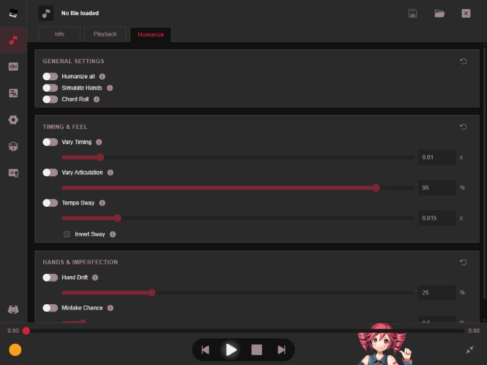
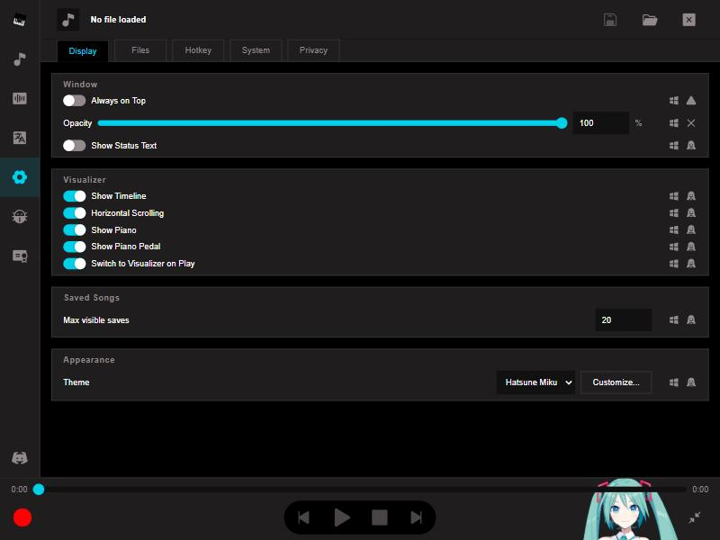
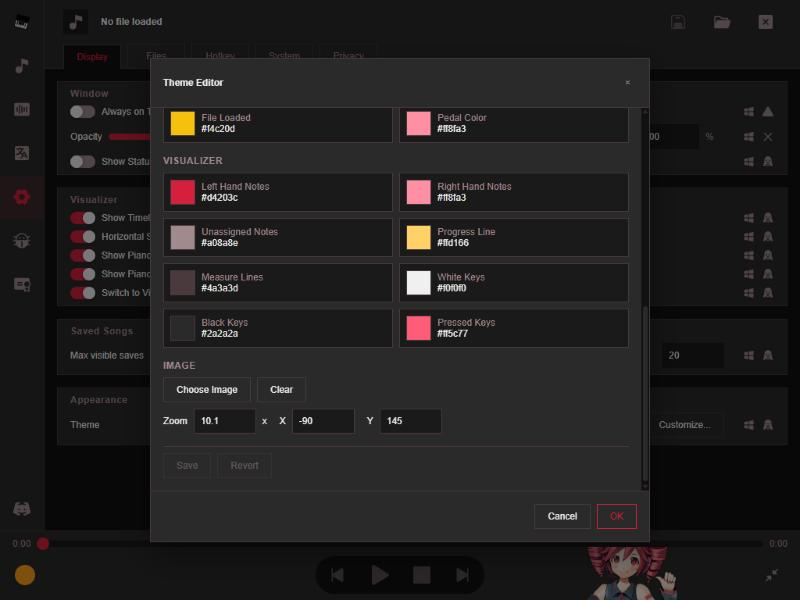
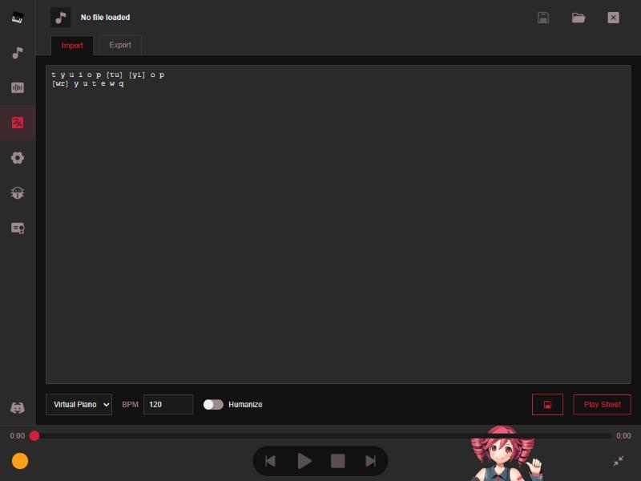

HuMidi plays MIDI files on Roblox virtual pianos. It varies timing, velocity and mistakes so a song doesn't sound like a machine is playing it. It's free and open source.
download
| Windows | Installer | .exe |
|---|---|---|
| macOS | Disk image | .dmg |
| Linux | Debian, Fedora, other | .deb .rpm .tar.gz |
features
screenshots




changelog
- 2.1.3
Linux and themes
Runs on Linux, with a .deb and a .rpm (tested on Mint and Fedora, X11 and Wayland), and hotkeys work on Wayland too. Themes can carry their own picture, with zoom and X/Y controls in the theme editor, and Hatsune Miku and Kasane Teto are built in. Settings show which platforms each option works on. The humanize and translator pages were reorganized, and sheets can be saved as text files. Loaded saves show their pedal in the visualizer.
- 2.1.2
PedalAI retrained
The pedal model was retrained on the credited datasets, alongside a round of bug fixes.
- 2.1.1
Hotkey fix and threshold curves
Fixed the hotkey issue and added editable pedal threshold curves.
- 2.1.0
Rewrite in Rust and React
Rebuilt from Python on React and Rust, which is lighter, faster and smaller. Added PedalAI, a trained model that generates the sustain pedal, with adjustable thresholds. Added macOS support.
- 2.0
Humanization and performance
A set of independent controls for velocity dynamics, articulation shaping and timing variance, and a drift correction system with a tunable decay factor. Added presets for saving and loading playback settings, a transpose slider, an auto-update checker and UI theme customization. The engine was also tightened up.
- 1.3
Overlay and visualization
Added the interactive timeline visualizer, which can scrub and seek through a track. Added Overlay Mode, with adjustable window opacity and an always-on-top toggle, and bindable hotkeys so it can run in the background while you play.
- 1.2
Logic and settings
Added auto-save config, which loads when the application runs and saves on Play, and an option to invert tempo sway weights. The GUI was rearranged, humanization factors were tweaked, and the dynamic pedal logic was improved.
- 1.1
Performance and theory
Fixed playback generation bugs and added 88-key layout support. Improved the UI and performance. The logic was reworked to follow music theory instead of basic assumptions, which made it more accurate.
- 1.0
The GUI release
The first major release. Turned a hard-to-use CLI script into a GUI where you toggle flags, load files and send the assembled commands with a click.
midi sources
- LibreScoreopen-source sheet music and MIDI files from the community
- MuseScorea large catalog of sheet music and MIDI files